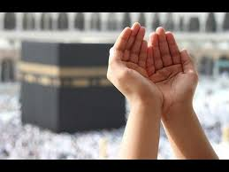
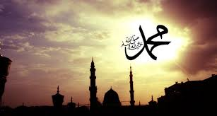

My Work
on Tuesday, 24 March 2015 Labels: Artikel Rasulullah
Nabi Muhammad Saw Pembawa Obor Kemanusiaan
Nabi Muhammad saw sosok pribadi yang agung. Catatan kehidupan beliau, mulai dari kelahirannya sampai beliau wafat telah sampai kepada kita secara komprehensif. Riwayat tentang segala ucapan dan tindakan beliau terpelihara dengan baik sehingga tidak ada sosok lain di dunia ini, yang setiap sisi kehidupanya, setiap aspek karakter dan ajarannya terdokumentasikan dengan baik yang dapat dibandingkan dengan kelengkapan catatan Nabi Muhammad saw. Bahkan hidup beliau sendiri merupakan buku yang terbuka, dimana kepribadian beliau yang suci senantiasa bersinar terang.
Nabi Muhammad saw dilahirkan di Mekkah pada tahun 570 M. Pada saat itu, setiap wilayah di dunia telah tenggelam dalam degradasi moral. Ajaran murni agama Kristen telah semakin memudar. Di India, penyembahan berhala dan ratusan isme semakin berkembang. Diskriminasi rasial yang berdasarkan kasta dan dogma "tak tersentuh" telah merajalela. Situasi ini digambarkan di dalam Al-Qur'an: Kerusakan telah meluas di daratan dan di lautan, di sebabkan perbuatan tangan manusia... (Ar-Rum: 41)
Bahkan bangsa-bangsa beradab telah berada di tangga terendah dari tangga agama, moral dan spiritual. Bahkan pada abad ke-5 dan ke-6, dunia beradab sedang berdiri di tebing kehancuran moral. Masyakat telah tenggelam pada perbuatan-perbuatan kotor, kebodohan, dan keacuhan. Keburukan dari alkolisme, perjudian, penindasan, tirani, kekerasan, kekejaman dan berbagai perbuatan buruk lainnya adalah hal yang biasa pada masa itu. Kepribadian Nabi Muhammad saw secara alami telah dianugerahi dengan keberuntungan. Ketaatan kepada Sang Pencipta dan cahaya kenabian di dalam diri beliau membuat beliau tidak pernah terpengaruh oleh penyakit masyarakat tersebut. Beliau adalah perwujudan dari kesucian, kemurnian akhlak dan kesalehan.
https://1artikelislam.blogspot.co.id/2015/03/ajaran-nabi-muhammad-saw-bagi-kemanusiaan.html